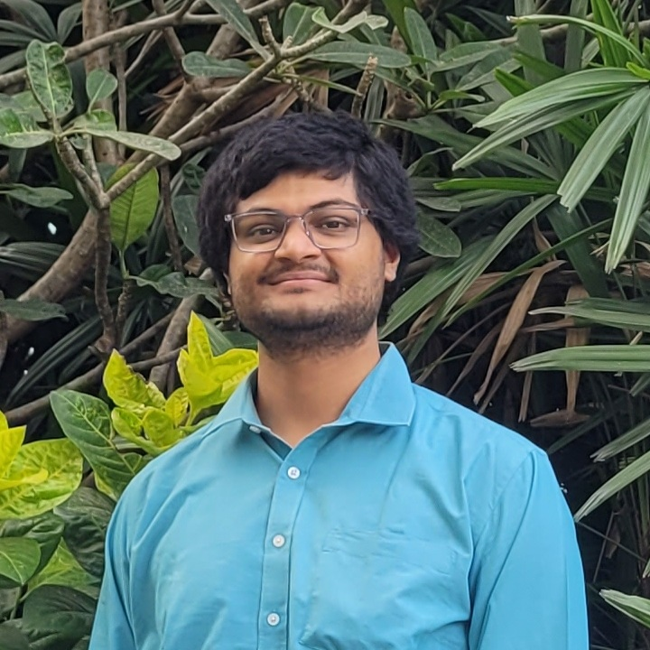

|
Utkarsh Mishra |
|
Hi, I am Utkarsh Mishra, an incoming MS student in Computer Engineering at Texas A&M University (Fall 2025). My research interests span vision–language models, computer vision, agentic systems, 3D graphics and reconstruction, diffusion models, and transformer-based architectures. I graduated with a B.Tech in Electrical Engineering and a minor in Computer Science from IIT Gandhinagar. Currently, I work as a System Analyst at HDFC Bank. I'm passionate about advancing 3D reconstruction, multimodal reasoning, and generative modeling through AI/ML. Let's connect to discuss innovative ideas in these spaces! |
 |
{kind=link}
Industrial and Research Experience |

HDFC Bank
July 2024 - Present |
HDFC Bank (Intern)
Summer 2023 |

Research @ IIT GN
2023 - 2024 |
Research Intern @ UIUC
Jan 2025 - Present |
News & Achievements
|
Publications |
|
Transformer Augmented Multi-Resolution Hash Encoding in Diffusion Model for 3D Point Cloud Denoising
Seema Kumari, Utkarsh Mishra, Srimanta Mandal, Shanmuganathan Raman Accepted at ICIP 2025 A novel approach combining transformer architectures with multi-resolution hash encoding in diffusion models for effective 3D point cloud denoising. |
|
|
To Be Uploaded Upon Acceptance
|
Constructive Distortion: Multimodal LLMs with Query‑Aware Image Warping
Dwip Dalal, Gautam Vashishtha, Utkarsh Mishra, Jeonghwan Kim, Madhav Kanda, Hyeonjeong Ha, Svetlana Lazebnik, Heng Ji, Unnat Jain Under review A query-aware image warping technique to enhance multimodal large language models' understanding of spatial relationships and visual reasoning. |
Projects |

|
Denoising Gaussian Splatting For 3D Scene Reconstruction
Guide: Prof. Ravi Hegde Aug 2024 - Dec 2024 Code Extended 3D Gaussian Splatting with denoising techniques (DBSCAN, point-wise distance pairing on input point cloud) and novel regularization techniques to reduce visual artifacts when using low resolution wide angle images. |

|
GAN Inversion for Latent Space Analysis
Guide: Prof. Anirban Dasgupta Jan 2024 - May 2024 Code Used GAN inversion on StyleGAN to analyze effect of object rotation on latent representation and generate novel views through latent space manipulation. |

|
Human Pose Classification using Spatial-Temporal GNNs
Guide: Prof. Ravi Hegde Jan 2024 - May 2024 Code | Poster Combined Graph Convolutional Networks with LSTM to model spatial relationships and temporal dynamics for pose classification using OpenPose and AlphaPose. |
|
Synthetic Data Generation for Machine Learning
Guide: Prof. Shanmuganathan Raman Aug 2023 - May 2024 Code | Poster Generated high-quality synthetic images using StyleGAN-XL and Stable Diffusion for CIFAR-10 dataset . Analyzed effects on classifier accuracy with varying synthetic to real data ratios. |
|
|
|
Wearable Device for Real Time Sign Language Recognition
Guide: Prof. Jhuma Saha Apr 2023 Code Developed wearable device using STM32 Nucleo microcontroller and flex sensors. Implemented USB CDC protocol with Scikit-learn MLP classifier for gesture detection. |